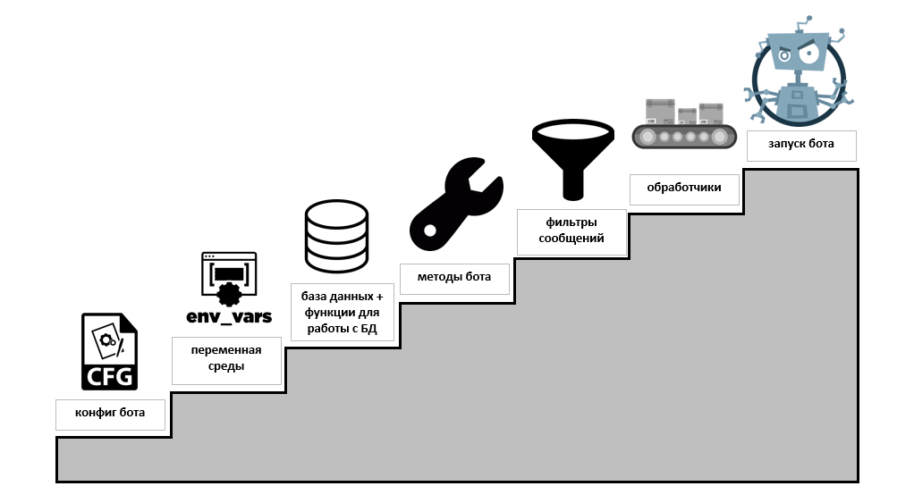
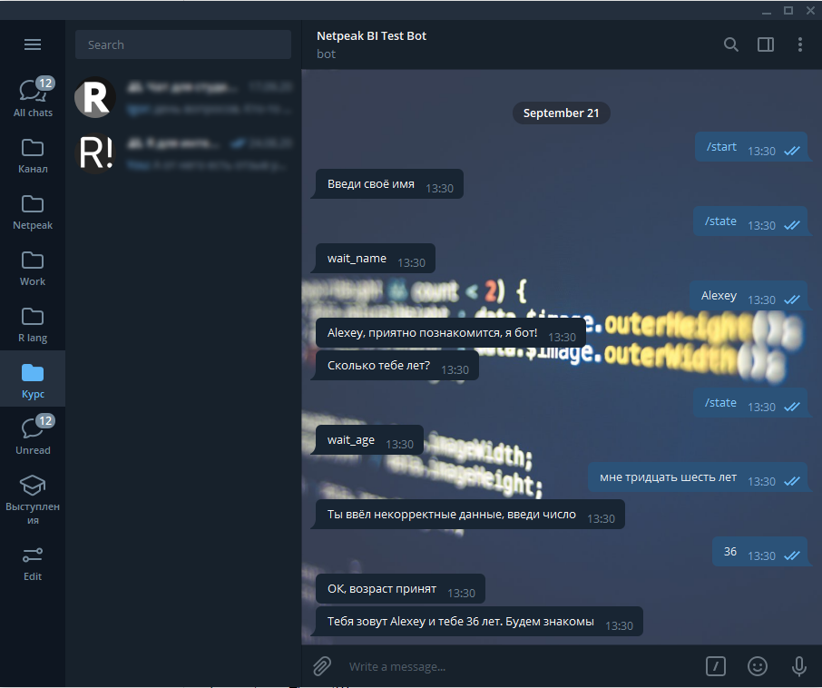

Пишем telegram бота на языке R (часть 4): Построение последовательного, логического диалога с ботом
Если вы уже ознакомились с предыдущими тремя статьями из данной серии, то вы уже умеете писать полноценных telegram ботов с клавиатурой.
В этой статье мы с вами научимся писать бота, который будет поддерживать последовательный диалог. Т.е. бот будет задавать вам вопросы, и ждать от вас ввода какой-либо информации. В зависимости от введённых вами данных бот будет выполнять некоторые действия.
Также в данной статье мы научимся использовать под капотом бота базы данных, в нашем примере это будет SQLite, но вы можете использовать любую другую СУБД. Более подробно о взаимодействии с базами данных на языке R я писал в этой статье.

Содержание
Если вы интересуетесь анализом данных возможно вам будут интересны мои telegram и youtube каналы. Большая часть контента которых посвящены языку R.
- Введение
- Процесс построения бота
- Структура проекта бота
- Конфиг бота
- Создаём переменную среды
- Создаём базу данных
- Пишем функции для работы с базой данных
- Методы бота
- Фильтры сообщений
- Обработчики
- Код запуска бота
- Заключение
Введение
Для того, что бы бот мог запрашивать от вас данные, и ждать ввод какой-либо информации вам потребуется фиксировать текущее состояние диалога. Лучший способ это делать, использовать какую нибудь встраиваемую базу данных, например SQLite.
Т.е. логика будет следующей. Мы вызываем метод бота, и бот последовательно запрашивает у нас какую-то информацию, при этом на каждом шаге он ждёт ввод этой информации, и может осуществлять её проверку.
Мы напишем максимально простого бота, сначала он будет спрашивать ваше имя, потом возраст, полученные данные будет сохранять в базу данных. При запросе возраста будет проверять, что бы введённые данные были числом, а не текстом.
Такой простой диалог будет иметь всего три состояния:
- start — обычное состояние бота, в котором он не ждёт от вас никакой информации
- wait_name — состояние, при котором бот ожидает ввод имени
- wait_age — состояние, при котором бот ожидает ввод вашего возраста, количество полных лет.
Процесс построения бота
В ходе статьи мы с вами шаг за шагом построим бота, весь процесс схематически можно изобразить следующим образом:

- Создаём конфиг бота, в котором будем хранить некоторые настройки. В нашем случае токен бота, и путь к файлу базы данных.
- Создаём переменную среды, в которой будет хранится путь к проекту с ботом.
- Создаём саму базу данных, и ряд функций для того, что бы бот мог взаимодействовать с ней.
- Пишем методы бота, т.е. функции которые он будет выполнять.
- Добавляем фильтры сообщений. С помощью которых бот будет обращаться к нужным методам, в зависимости от текущего состояния чата.
- Добавляем обработчики, которые свяжут команды и сообщения с нужными методами бота.
- Запускаем бота.
Структура проекта бота
Для удобства мы разобъём код нашего бота, и прочие связанные с ним файлы на следующую структуру.
- bot.R — основной код нашего бота
- db_bot_function.R — блок кода с функциями для работы с базой данных
- bot_methods.R — код методов бота
- message_filters.R — фильтры сообщений
- handlers.R — обработчики
- config.cfg — конфиг бота
- create_db_data.sql — SQL скрипт создания таблицы с данными чата в базе данных
- create_db_state.sql — SQL скрипт создания таблицы текущего состояния чата в базе данных
- bot.db — база данных бота
Весь проект бота можно посмотреть, или скачать из моего репозитория на GitHub.
Конфиг бота
В качестве конфига мы будем использовать обычный ini файл, следующего вида:
[bot_settings]
bot_token=ТОКЕН_ВАШЕГО_БОТА
[db_settings]
db_path=C:/ПУТЬ/К/ПАПКЕ/ПРОЕКТА/bot.db
В конфиг мы записываем токен бота, и путь к базе данных, т.е. к файлу bot.db, сам файл мы будем создавать на следующем шаге.
Для более сложных ботов можно создавать и более сложные конфиги, к тому же необязательно писать именно ini конфиг, можете использовать любой другой формат включая JSON.
Создаём переменную среды
На каждом ПК папка с проектом бота может располагаться в разных директориях, и на разных дисках, поэтому в коде путь к папке проекта будет задан через переменную среды TG_BOT_PATH.
Создать переменную среды можно несколькими способами, наиболее простой — прописать её в файле .Renviron.
Создать, или редактировать данный файл можно с помощью команды file.edit(path.expand(file.path("~", ".Renviron"))). Выполните её и добавьте в файл одну строку:
TG_BOT_PATH=C:/ПУТЬ/К/ВАШЕМУ/ПРОЕКТУ
Далее сохраните файл .Renviron и перезапустите RStudio.
Создаём базу данных
Следующий шаг — создание базы данных. Нам понадобится 2 таблицы:
- chat_data — данные которые бот запросил у пользователя
- chat_state — текущее состояние всех чатов
Создать эти таблицы можно с помощью следующего SQL запроса:
CREATE TABLE chat_data (
chat_id BIGINT PRIMARY KEY
UNIQUE,
name TEXT,
age INTEGER
);
CREATE TABLE chat_state (
chat_id BIGINT PRIMARY KEY
UNIQUE,
state TEXT
);
Если вы скачали проект бота с GitHub, то для создания базы можете воспользоваться следующим кодом на языке R.
# Скрипт создания базы данных
library(DBI) # интерфейс для работы с СУБД
library(configr) # чтение конфига
library(readr) # чтение текстовых SQL файлов
library(RSQLite) # драйвер для подключения к SQLite
# директория проекта
setwd(Sys.getenv('TG_BOT_PATH'))
# чтение конфига
cfg <- read.config('config.cfg')
# подключение к SQLite
con <- dbConnect(SQLite(), cfg$db_settings$db_path)
# Создание таблиц в базе
dbExecute(con, statement = read_file('create_db_data.sql'))
dbExecute(con, statement = read_file('create_db_state.sql'))
Пишем функции для работы с базой данных
У нас уже готов файл конфигурации и создана база данных. Теперь необходимо написать функции для чтения и записи данных в эту базу.
Если вы скачали проект из GitHub, то функции вы можете найти в файле db_bot_function.R.
# ###########################################################
# Function for work bot with database
# получить текущее состояние чата
get_state <- function(chat_id) {
con <- dbConnect(SQLite(), cfg$db_settings$db_path)
chat_state <- dbGetQuery(con, str_interp("SELECT state FROM chat_state WHERE chat_id == ${chat_id}"))$state
return(unlist(chat_state))
dbDisconnect(con)
}
# установить текущее состояние чата
set_state <- function(chat_id, state) {
con <- dbConnect(SQLite(), cfg$db_settings$db_path)
# upsert состояние чата
dbExecute(con,
str_interp("
INSERT INTO chat_state (chat_id, state)
VALUES(${chat_id}, '${state}')
ON CONFLICT(chat_id)
DO UPDATE SET state='${state}';
")
)
dbDisconnect(con)
}
# запись полученных данных в базу
set_chat_data <- function(chat_id, field, value) {
con <- dbConnect(SQLite(), cfg$db_settings$db_path)
# upsert состояние чата
dbExecute(con,
str_interp("
INSERT INTO chat_data (chat_id, ${field})
VALUES(${chat_id}, '${value}')
ON CONFLICT(chat_id)
DO UPDATE SET ${field}='${value}';
")
)
dbDisconnect(con)
}
# read chat data
get_chat_data <- function(chat_id, field) {
con <- dbConnect(SQLite(), cfg$db_settings$db_path)
# upsert состояние чата
data <- dbGetQuery(con,
str_interp("
SELECT ${field}
FROM chat_data
WHERE chat_id = ${chat_id};
")
)
dbDisconnect(con)
return(data[[field]])
}
Мы создали 4 простые функции:
get_state()— получить текущее состояние чата из БДset_state()— записать текущее состояние чата в БДget_chat_data()— получить данные отправленные пользователемset_chat_data()— записать данные полученные от пользователя
Все функции достаточно простые, они либо читают данные из базы с помощью команды dbGetQuery(), либо совершают UPSERT операцию (изменение существующих данных или запись новых данных в БД), с помощью функции dbExecute().
Синтаксис UPSERT операции выглядит следующим образом:
INSERT INTO chat_data (chat_id, ${field})
VALUES(${chat_id}, '${value}')
ON CONFLICT(chat_id)
DO UPDATE SET ${field}='${value}';
Т.е. в наших таблицах поле chat_id имеет ограничение по уникальности и является первичным ключом таблиц. Изначально мы пробуем добавить информацию в таблицу, и получаем ошибку если данные по текущему чату уже присутствуют, в таком случае мы просто обновляем информацию по данному чату.
Далее эти функции мы будем использовать в методах и фильтрах бота.
Методы бота
Следующим шагом в построении нашего бота будет создание методов. Если вы скачали проект с GitHub, то все методы находятся в файле bot_methods.R.
# ###########################################################
# bot methods
# start dialog
start <- function(bot, update) {
#
# Send query
bot$sendMessage(update$message$chat_id,
text = "Введи своё имя")
# переключаем состояние диалога в режим ожидания ввода имени
set_state(chat_id = update$message$chat_id, state = 'wait_name')
}
# get current chat state
state <- function(bot, update) {
chat_state <- get_state(update$message$chat_id)
# Send state
bot$sendMessage(update$message$chat_id,
text = unlist(chat_state))
}
# reset dialog state
reset <- function(bot, update) {
set_state(chat_id = update$message$chat_id, state = 'start')
}
# enter username
enter_name <- function(bot, update) {
uname <- update$message$text
# Send message with name
bot$sendMessage(update$message$chat_id,
text = paste0(uname, ", приятно познакомится, я бот!"))
# Записываем имя в глобальную переменную
#username <<- uname
set_chat_data(update$message$chat_id, 'name', uname)
# Справшиваем возраст
bot$sendMessage(update$message$chat_id,
text = "Сколько тебе лет?")
# Меняем состояние на ожидание ввода имени
set_state(chat_id = update$message$chat_id, state = 'wait_age')
}
# enter user age
enter_age <- function(bot, update) {
uage <- as.numeric(update$message$text)
# проверяем было введено число или нет
if ( is.na(uage) ) {
# если введено не число то переспрашиваем возраст
bot$sendMessage(update$message$chat_id,
text = "Ты ввёл некорректные данные, введи число")
} else {
# если введено число сообщаем что возраст принят
bot$sendMessage(update$message$chat_id,
text = "ОК, возраст принят")
# записываем глобальную переменную с возрастом
#userage <<- uage
set_chat_data(update$message$chat_id, 'age', uage)
# сообщаем какие данные были собраны
username <- get_chat_data(update$message$chat_id, 'name')
userage <- get_chat_data(update$message$chat_id, 'age')
bot$sendMessage(update$message$chat_id,
text = paste0("Тебя зовут ", username, " и тебе ", userage, " лет. Будем знакомы"))
# возвращаем диалог в исходное состояние
set_state(chat_id = update$message$chat_id, state = 'start')
}
}
Мы создали 5 методов:
- start — Запуск диалога
- state — Получить текущее состояние чата
- reset — Сбросить текущее состояние чата
- enter_name — Бот запрашивает ваше имя
- enter_age — Бот запрашивает ваш возраст
Метод start запрашивает ваше имя, и переводит состояние чата в wait_name, т.е. в режим ожидания ввода вашего имени.
Далее, вы отправляете имя и оно обрабатывается методом enter_name, бот с вами здоровается, записывает полученное имя в базу, и переводит чат в состояние wait_age.
На этом этапе бот ждёт от вас ввода вашего возраста. Вы отправляете ваш возраст, бот проверяет сообщение, если вы вместо числа отправили какой-то текст он скажет: Ты ввёл некорректные данные, введи число, и будет ждать от вас повторного ввода данных. В случае если вы отправили число, бот сообщит о том, что он принял ваш возраст, запишет полученные данные в базу, сообщит все полученные от вас данные и переведёт состояние чата в исходное положение, т.е. в start.
Вызвав метод state вы в любой момент можете запросить текущее состояние чата, а методом reset перевести чат в исходное состояние.
Фильтры сообщений
В нашем случае это одна из наиболее важных частей в построении бота. Именно с помощью фильтров сообщений бот будет понимать какую информацию он от вас ждёт, и как её надо обрабатывать.
В проекте на GitHub фильтры прописаны в файле message_filters.R.
Код фильтров сообщений:
# ###########################################################
# message state filters
# фильтр сообщений в состоянии ожидания имени
MessageFilters$wait_name <- BaseFilter(function(message) {
get_state( message$chat_id ) == "wait_name"
}
)
# фильтр сообщений в состоянии ожидания возраста
MessageFilters$wait_age <- BaseFilter(function(message) {
get_state( message$chat_id ) == "wait_age"
}
)
В фильтрах мы используем написанную ранее функцию get_state(), для того, что бы запрашивать текущее состояние чата. Данна функция требует всего 1 аргумент, id чата.
Далее фильтр wait_name обрабатывает сообщения когда чат находится в состоянии wait_name, и соответственно фильтр wait_age обрабатывает сообщения когда чат находится в состоянии wait_age.
Обработчики
Файл с обработчиками называется handlers.R, и имеет следующий код:
# ###########################################################
# handlers
# command handlers
start_h <- CommandHandler('start', start)
state_h <- CommandHandler('state', state)
reset_h <- CommandHandler('reset', reset)
# message handlers
## !MessageFilters$command - означает что команды данные обработчики не обрабатывают,
## только текстовые сообщения
wait_age_h <- MessageHandler(enter_age, MessageFilters$wait_age & !MessageFilters$command)
wait_name_h <- MessageHandler(enter_name, MessageFilters$wait_name & !MessageFilters$command)
Сначала мы создаём обработчики команд, которые позволят вам запускать методы для начала диалога, его сброса, и запроса текущего состояния.
Далее мы создаём 2 обработчика сообщений с использованием созданных на прошлом шаге фильтров, и добавляем к ним фильтр !MessageFilters$command, для того, что бы мы в любом состоянии чата могли использовать команды.
Код запуска бота
Теперь у нас всё готово к запуску, основной код запуска бота находится в файле bot.R.
library(telegram.bot)
library(tidyverse)
library(RSQLite)
library(DBI)
library(configr)
# переходим в папку проекта
setwd(Sys.getenv('TG_BOT_PATH'))
# читаем конфиг
cfg <- read.config('config.cfg')
# создаём экземпляр бота
updater <- Updater(cfg$bot_settings$bot_token)
# Загрузка компонентов бота
source('db_bot_function.R') # функции для работы с БД
source('bot_methods.R') # методы бота
source('message_filters.R') # фильтры сообщений
source('handlers.R') # обработчики сообщений
# Добавляем обработчики в диспетчер
updater <- updater +
start_h +
wait_age_h +
wait_name_h +
state_h +
reset_h
# Запускаем бота
updater$start_polling()
В результате, у нас получился вот такой бот:

В любой момент с помощью команды /state мы можем запрашивать текущее состояние чата, а с помощью команды /reset переводить чат в исходное состояние и начинать диалог заново.
Заключение
В этой статье мы разобрались как использовать внутри бота базы данных, и как строить последовательные логические диалоги за счёт фиксации состояния чата.
В данном случае мы рассмотрели самый примитивный пример, для того, что бы вам проще было понять идею построения таких ботов, на практике вы можете строить гораздо более сложные диалоги.
В следующей статье из этой серии мы научимся ограничивать пользователям бота права на использования различных его методов.